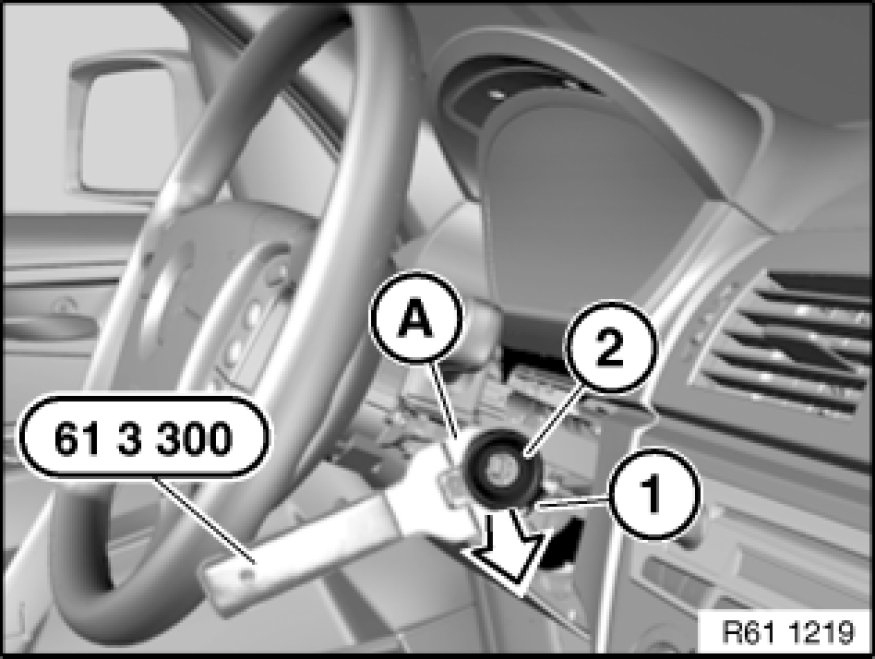

Antitheft Antenna: Service and Repair
61 35 900 - Removing and installing/replacing ring antenna of electronic immobilizer

Special tools required:
- 61 3 300 61 3 300 Removal Tool

Necessary preliminary tasks:
- Remove top section of steering column casing Replacing Upper Section of Steering Column Trim.

Disconnect plug connection (1).
Position special tool 61 3 300 61 3 300 Removal Tool as illustrated with flattened side (A) to ring antenna of electronic immobilizer (2).
Lever out ring antenna of electronic immobilizer (2) in direction of arrow and remove.